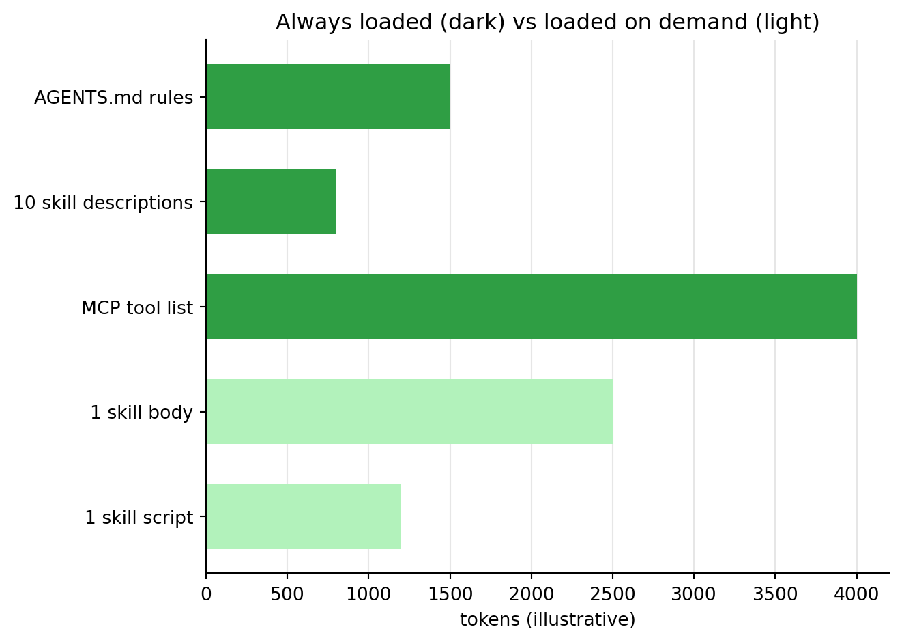

Session 5 · de-code skills and MCP
Democratizing Coding with AI — Fri 9 Oct
nils.holmberg@iko.lu.se
Topics
1 Skills
1.1 From prompts to skills
This week we have given AI agents four kinds of text. Each one does a different job:
| Text | What it says | When the agent reads it | Session |
|---|---|---|---|
| Prompt | Do this, now | Once, when you send it | 1–2 |
| Spec | What to build and how to check it | When you point the agent to it | 3–4 |
| AGENTS.md | Rules that always apply | At the start of every task | 4 |
| Skill | How to do a kind of task, step by step | Only when the task needs it | 5 |
A skill is a reusable procedure: a folder with instructions, and optionally scripts and templates, that teaches an agent how to do one kind of task well — the way you want it done. Write it once, and every later task of that kind starts from your best practice instead of from scratch.
1.2 Anatomy of a skill
A skill is a folder. Only one file is required, SKILL.md; the rest is optional:
SKILL.md has two parts. The front matter between the --- lines holds the skill’s name and a description of what it does and when to use it. The body is plain Markdown: the steps, rules and checks.
minimal_skill = """---
name: tsv-summary
description: Summarise a tab-separated data file. Use when the user asks what is in
a .tsv file, or wants a quick overview of its columns before an analysis.
---
# TSV summary
1. Read the file with pandas (sep="\\t").
2. Report the number of rows and columns, and the missing values per column.
3. For each numeric column: mean, SD, min and max, rounded to two decimals.
4. For each text column: the five most frequent values.
5. End with two sentences on what the data seems to be about.
"""1.3 How agents use skills
An agent may have dozens of skills, but it does not read them all. At the start it only sees each skill’s name and description — a few lines each, so they cost little of the context window (see the chart above). When your request matches a description, the agent reads that skill’s body, and opens its scripts or references only if a step needs them. This is called progressive disclosure.
So the description is the trigger. Write it as what it does plus “Use when …”, with the words people actually use when they ask for that task. There are two ways to use a skill:
- Automatically: ask in your own words (“give me an overview of survey.tsv”) and the agent picks the matching skill.
- By name: type a slash command with the skill name, e.g.
/tsv-summary survey.tsv.
In Antigravity, a project’s skills live in .agents/skills/<name>/SKILL.md inside the project folder; skills for all your projects are configured under ~/.gemini/config. Type /skills to see which skills the agent has, and /skills reload after adding or editing one.
1.4 Official and custom skills
| Official skills | Custom skills | |
|---|---|---|
| Written by | The company behind the agent or tool | You, your team or your course |
| Examples | Antigravity’s built-in skills such as /grill-me; Anthropic’s public skills for Word, Excel, PowerPoint and PDF files |
The data analysis skill below |
| Good for | General tasks that are the same for everyone | Your data, conventions, and quality checks |
| Updated | By the publisher | By you, when your practice changes |
| Trust | Comes from a known source | You know what is in it |
Both follow the same open format, Agent Skills, so a skill written for one agent often works in others. A skill can include scripts that run on your computer, so treat skills from others like any other software: read SKILL.md and its scripts before you install it (session 4, Safety first!).
1.5 A data analysis skill
Now we turn the analysis steps from sessions 1 and 2 into a custom skill. It takes any tab-separated data file and an analysis spec like the one in session 2, and writes the analysis as a notebook or a web page. The steps are general, and the details come from the spec — so the same skill works for the toy dataset, the TPB experiment, or your own survey.
skill_md = """---
name: data-analysis
description: Analyse a tab-separated data file (.tsv) following an analysis spec, and
write the result as a Jupyter notebook or a stand-alone HTML page. Use when the user
wants descriptives, plots, group comparisons or correlations for a .tsv file, or
points to an ANALYSIS-SPEC.md.
---
# Data analysis
## Inputs
- A .tsv file: a path or a URL.
- An analysis spec (Markdown). If there is none, draft one from the data using
references/spec-template.md, show it to the user, and wait for approval.
- Output format: notebook (.ipynb) or web page (.html). Ask if it is not given.
## Steps
1. Read the spec. List its variables and analysis steps.
2. Inspect the data: rows, columns, types, missing values. Check that every variable
in the spec exists; if not, stop and report the mismatch.
3. Load: report rows, columns and missing values.
4. Describe: mean, SD, skewness and kurtosis for numeric variables; frequency
tables for categorical variables and items.
5. Visualise: a histogram with a density curve per numeric variable; a bar chart
per categorical variable.
6. Relate the outcome to each predictor: group means and SDs, a correlation matrix,
box plots by group, scatter plots with a fitted line.
7. Test: Welch's t-test with Cohen's d for group differences; Pearson's r with
p-values for numeric predictors.
Do only the steps the spec asks for, in the spec's order.
## Output
- Notebook: <data-name>-analysis.ipynb with Python (pandas, seaborn, scipy).
- Web page: <data-name>-analysis.html, one file, with Observable Plot and d3 from a
CDN and the statistics in plain JavaScript (as in the session 2 spec).
- One section per step; under every result, two or three sentences in plain
language on what it means.
## Checks before you finish
- The notebook runs top to bottom without errors, or the page opens without
errors in the browser console.
- Every analysis step in the spec has a section.
- Report the key numbers (effect sizes, correlations) in your final message, so the
user can compare them with the spec's check values.
"""The reference file is the spec format from session 2, with placeholders the agent fills in when it drafts a spec for a new dataset:
spec_template = """# Analysis spec: <dataset name>
## Data
- File: <path or URL> (tab-separated, <n> rows)
- Grouping variable(s): <name>: <levels>
- Items: <names and scale, e.g. 1-5>
- Indices = item means: <index names> (<which one is the outcome>)
## Analyses
1. Load: check rows, columns and missing values.
2. Describe: descriptives for numeric variables; frequencies for categorical ones.
3. Visualise: histograms; bar charts.
4. Relate the outcome to each predictor.
5. Test: group differences and correlations.
## Output
- Format: notebook or web page.
- Check values (if known): <e.g. Cohen's d = 0.58>
"""Save both files into the folder layout that Antigravity looks for. The cell also packs the folder into data-analysis-skill.zip: in Colab, download that file from the Files panel and unzip it in your project folder (Colab hides folders whose names start with a dot).
from pathlib import Path
skill_dir = Path(".agents/skills/data-analysis")
(skill_dir / "references").mkdir(parents=True, exist_ok=True)
(skill_dir / "SKILL.md").write_text(skill_md)
(skill_dir / "references" / "spec-template.md").write_text(spec_template)
print(*sorted(p.as_posix() for p in skill_dir.rglob("*")), sep="\n")
import shutil
shutil.make_archive("data-analysis-skill", "zip", root_dir=".", base_dir=".agents")1.6 Use the skill
Open the project folder in Antigravity, check that the skill is listed with /skills, and try it both ways — by name and in your own words:
by_name = """
/data-analysis https://raw.githubusercontent.com/nils-holmberg/de-code/main/csv/komp014-simulated-data-n100.tsv
ANALYSIS-SPEC.md, as a notebook
"""
own_words = """
I have the TPB experiment data in komp014-tpb-exp-n100.tsv. Can you analyse whether
the message condition affects intention, and make it a web page?
"""Check the first result against session 1: Cohen’s d ≈ 0.58 for the group difference and r ≈ .41 for both indices. For the second request there is no spec yet, so the skill should first draft one from the data and ask you to approve it — that is step “Inputs” doing its job.
2 MCP: Model Context Protocol
2.1 Why MCP
A skill teaches the agent how to do something with the tools it already has: reading and writing files, running commands. Some tasks need more: opening a web page in a real browser, reading issues on GitHub, querying a database, checking a calendar. The Model Context Protocol (MCP) is an open standard for giving an agent such new tools and data.
Before MCP, every AI app needed its own connector for every service. With MCP, a service is wrapped once as an MCP server, and every agent that speaks MCP — Antigravity, Claude, ChatGPT and many code editors — can use it. It is often compared to USB-C: one plug for everything.
2.2 Anatomy of MCP
| Part | What it is | Example |
|---|---|---|
| Host | The AI app you use | Antigravity |
| Client | The connection inside the host, one per server | Antigravity’s link to the GitHub server |
| Server | A small program that offers capabilities | The GitHub MCP server |
A server can offer three kinds of things:
- Tools — actions the agent can call, with named inputs:
search_issues(query),take_screenshot(url). - Resources — data the agent can read: a file, a database table, a codebook.
- Prompts — ready-made prompt templates the user can pick.
Servers run in one of two ways (the transport): locally, as a program on your computer that the host starts and talks to (stdio), or remotely, at a web address (HTTP). One tool call goes like this:
- You ask: “Which issues are open in my repo?”
- The agent sees a matching tool in the server’s tool list and calls it, with inputs.
- Antigravity asks for your approval (unless you allowed that tool before).
- The server does the work and sends the result back.
- The agent reads the result and answers you — or calls the next tool.
2.3 Skills and MCP
| Skill | MCP server | |
|---|---|---|
| Adds | Know-how: steps, rules, checks | Abilities and data: new tools |
| Is | Text (+ optional scripts) | A running program |
| Context cost | Small until used | Its tool list is loaded while it is on |
| Write your own | Easy: a Markdown file | Some code (a few lines in Python) |
| Use when | You repeat a kind of task | The agent cannot reach something it needs |
They work well together: a skill can say which MCP tools to use, and in what order.
2.4 Build a minimal MCP server
A server in Python takes a few lines with the official MCP Python SDK. Each tool is an ordinary function: its name, type hints and docstring tell the agent what it does and which inputs it takes. This server offers two of the session 1 analyses as tools, plus the dataset’s codebook as a resource:
server_code = '''
"""komp014 MCP server: quick analyses of a tab-separated data file."""
import pandas as pd
from scipy import stats
from mcp.server import MCPServer
mcp = MCPServer("komp014")
@mcp.tool()
def describe_tsv(url: str) -> dict:
"""Rows, columns and the mean of every numeric column of a .tsv file."""
df = pd.read_csv(url, sep="\\t")
means = df.select_dtypes("number").mean().round(2)
return {"rows": len(df), "columns": list(df.columns), "means": means.to_dict()}
@mcp.tool()
def group_difference(url: str, group: str, outcome: str) -> dict:
"""Welch t-test and Cohen's d for the outcome between the two levels of group."""
df = pd.read_csv(url, sep="\\t")
a, b = [g[outcome] for _, g in df.groupby(group)]
t, p = stats.ttest_ind(a, b, equal_var=False)
sd = ((a.var() * (len(a) - 1) + b.var() * (len(b) - 1)) / (len(a) + len(b) - 2)) ** 0.5
d = (a.mean() - b.mean()) / sd
return {"t": round(float(t), 2), "p": round(float(p), 4), "d": round(float(d), 2)}
@mcp.resource("komp014://codebook")
def codebook() -> str:
"""What the columns of the komp014 toy dataset mean."""
return ("IV_CAT_GROUP: category1/category2. Items 1-5: IV1_ITEM1, IV1_ITEM2, "
"IV2_ITEM1, IV2_ITEM2, DV_ITEM1, DV_ITEM2. Indices are item means: "
"IV_INDEX1, IV_INDEX2, DV_INDEX (outcome).")
if __name__ == "__main__":
mcp.run() # local server: talks to the host over stdin/stdout
'''
with open("komp014_server.py", "w") as f:
f.write(server_code)To use it, you need Python with the mcp package on your own computer (MCP servers run next to the agent, not in Colab). Try the server in the MCP Inspector, a web page where you can call its tools by hand, then add it to Antigravity and check that it is listed:
Then ask the agent something only the server can answer quickly:
The answer should report a Cohen’s d of size 0.58 (its sign shows which group scores higher) — the same effect as in session 1, now computed by a tool the agent called.
2.5 Existing MCP servers
Many MCP servers are ready to use. Most are added with a single agy mcp add command (or in the Antigravity app’s MCP settings) — local ones as a command, remote ones as a URL:
| Server | What the agent can do | Add it |
|---|---|---|
| Filesystem | Read and write files in folders you choose | agy mcp add fs npx -y @modelcontextprotocol/server-filesystem ~/projects |
| Fetch | Download a web page as text | agy mcp add fetch uvx mcp-server-fetch |
| Git | Read history, diffs and branches of a repository | agy mcp add git uvx mcp-server-git |
| Memory | Remember facts between conversations | agy mcp add memory npx -y @modelcontextprotocol/server-memory |
| Time | Current time and time zone conversion | agy mcp add time uvx mcp-server-time |
| Playwright | Open and click through web pages in a browser | agy mcp add playwright npx -y @playwright/mcp@latest |
| Chrome DevTools | Inspect a page in Chrome: console errors, layout, speed | agy mcp add devtools npx -y chrome-devtools-mcp@latest |
| GitHub | Issues, pull requests and code on GitHub (needs a token) | agy mcp add --header "Authorization: Bearer <token>" github https://api.githubcopilot.com/mcp/ |
| Context7 | Up-to-date documentation for code libraries (needs a key) | agy mcp add --header "Authorization: Bearer <key>" context7 https://mcp.context7.com/mcp |
npx needs Node.js and uvx needs uv on your computer. The same safety rules as in session 4 apply, with one more: an MCP server is a program that runs with your permissions.
- Prefer servers from the service itself or the MCP project, and read what each tool does.
- Give tokens and folders the smallest access that works (read-only if you can).
- Keep tool approval on, and turn servers off (
agy mcp disable <name>) when you do not need them — their tool lists also take up context.
3 Putting it together
3.1 A skill that uses MCP
Skills and MCP combine naturally. Add one line to the data analysis skill’s steps, and the agent uses the komp014 server for a quick first look before it writes the full analysis:
The skill holds the procedure, the server provides the tool, and AGENTS.md still sets the rules — each part stays small and can be reused on its own. Antigravity can also bundle skills, rules and MCP servers into one installable plugin (/plugin), which is how teams share a complete setup.
3.2 The week in one table
| Session | You made | What the AI got from you |
|---|---|---|
| 1 Data analysis | An analysis, step by step | Prompts |
| 2 Data generation | Simulated data and personas | A detailed prompt, then an analysis spec |
| 3 App building | App specs: Shiny, word clouds | Specs with acceptance checks |
| 4 Agentic coding | Apps built by an agent, spec by spec; a first agent in Python | AGENTS.md rules and specs that it updates |
| 5 Skills and MCP | A reusable skill, a small MCP server | Procedures and new tools |
The common thread is specifications as code: the clearer and more reusable the text you give an AI, the more you can hand over — and the easier it is to check the result.
3.3 Your turn
- Pick a task you repeat in your own work — a report, a data check, a type of analysis.
- Write it as a skill: a
SKILL.mdwith a clear “Use when …” description and five to ten steps, saved in.agents/skills/<name>/in a project folder. - Use it twice in Antigravity, once by name and once in your own words, and improve the description until the agent picks it up by itself.
- Pick one MCP server from the table, add it, and use it in a small task — then turn it off again if you do not need it.

resn.dev